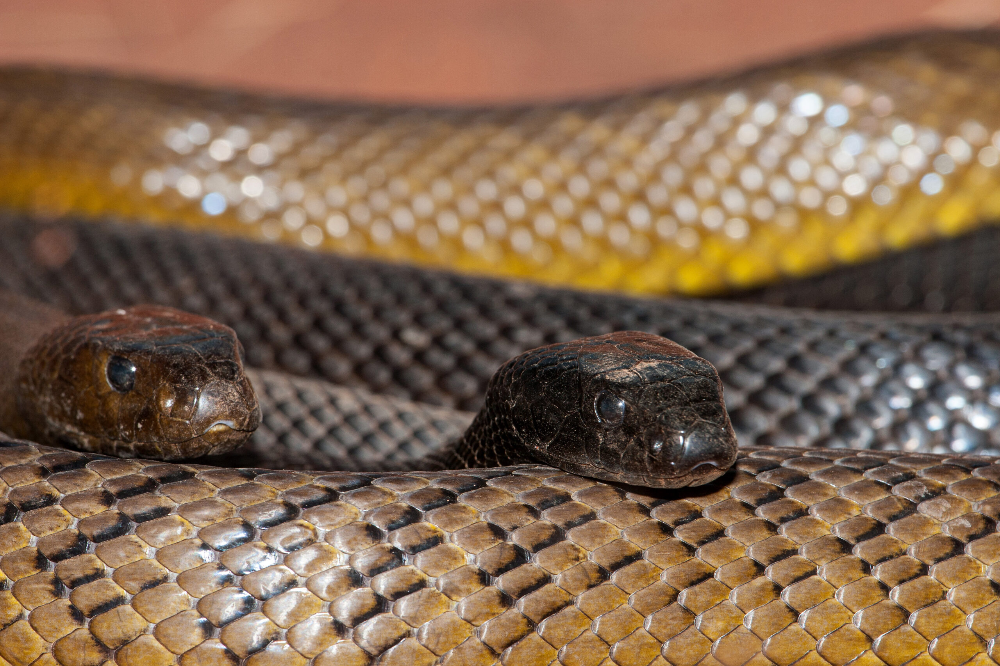

.jpg)
.jpg)
.jpg)
Inland Taipan/Fierce Snake
ชื่อวิทยาศาสตร์: Oxyuranus microlepidotus
ลักษณะทั่วไป
งูไทปันโพ้นทะเล หรือ Inland Taipan (Oxyuranus microlepidotus) จัดเป็นงูพิษที่มีขนาดใหญ่ถึงปานกลาง โครงสร้างร่างกายได้รับการวิวัฒนาการมาอย่างประณีตเพื่อให้เหมาะกับการดำรงชีวิตและการล่าสัตว์เลี้ยงลูกด้วยนมขนาดเล็กในสภาพแวดล้อมที่แห้งแล้งและทารุณของทวีปออสเตรเลีย
1. สัดส่วนและขนาดร่างกาย (Size and Dimensions)
- ความยาวลำตัว: โดยทั่วไปงูไทปันโพ้นทะเลตัวโตเต็มวัยจะมีมีความยาวเฉลี่ยอยู่ที่ประมาณ 1.8 ถึง 2.5 เมตร (6 ถึง 8.2 ฟุต) อย่างไรก็ตาม ในตัวอย่างที่มีขนาดใหญ่เป็นพิเศษเคยมีรายงานความยาวพุ่งสูงถึงเกือบ 2.7 เมตร
- ความหนาและมวลร่างกาย: แม้จะมีลำตัวที่ยาว แต่รูปทรงโดยรวมของพวกมันจัดอยู่ในกลุ่มงูที่มีรูปร่างเพรียวยาวถึงปานกลาง (Slender to moderately stout build) ไม่ดูล่ำสันหรืออ้วนป้อมเหมือนงูในกลุ่มงูเหลือมงูหลามหรืองูพิษเขี้ยวยาว (Vipers) น้ำหนักตัวเต็มวัยจะอยู่ที่ประมาณ 1.5 ถึง 2.5 กิโลกรัม ซึ่งลำตัวที่เพรียวนี้ช่วยให้พวกมันเคลื่อนที่ได้อย่างรวดเร็วและสามารถเลื้อยชอนไชเข้าไปในรอยแยกของแผ่นดินแห้งระแหงเพื่อไล่ล่าเหยื่อได้อย่างสะดวก
2. โครงสร้างหัวและคอ (Cranial & Cervical Morphology)
- รูปทรงของหัว: โครงสร้างหัวของ Inland Taipan มีลักษณะเป็นรูปไข่ทรงยาว (Elongated, rectangular-oval head) ที่มีความเรียวม่อน ไร้เหลี่ยมสันที่เด่นชัด ลำหัวมองดูราบเรียบและมีความกลมกลืนเชื่อมต่อกับลำตัว ต่างจากงูพิษบกหลายชนิดที่มีหัวทรงสามเหลี่ยมกว้างชัดเจน
- บริเวณคอ: คอของมันมีความกว้างใกล้เคียงกับส่วนหัว มีความคอดเพียงเล็กน้อยเท่านั้น ซึ่งการไม่มีคอกิ่วชัดเจนช่วยเพิ่มความแข็งแกร่งของกล้ามเนื้อส่วนต้นคอ ทำให้มันสามารถพุ่งฉกสังหารเหยื่อด้วยความเร็วสูงมากได้
- ดวงตา: ดวงตาของ Inland Taipan มีขนาดปานกลางถึงใหญ่ ม่านตาเป็นสีน้ำตาลเข้มถึงดำสนิท โดยมีขอบวงกลมสีส้มหรือสีน้ำตาลอ่อนล้อมรอบม่านตาอย่างเด่นชัด การตั้งอยู่ของดวงตาเอียงไปทางด้านข้างเล็กน้อย ทำให้มีขอบเขตการมองเห็นที่กว้างขวาง เหมาะสำหรับการตรวจจับการเคลื่อนไหวของเหยื่อในที่โล่ง
3. ลายและลักษณะเกล็ด (Scalation & Texture)
- ความเรียบของเกล็ด: เกล็ดตามลำตัวของ Inland Taipan เป็นเกล็ดชนิดเรียบมัน (Smooth scales) ไม่มีสันตรงกลางเกล็ด (Unkeeled) ทำให้ลำตัวมองดูมีความเงางาม ลื่น และช่วยลดแรงเสียดทานเวลาเลื้อยผ่านช่องหินหรือรูใต้ดิน
- การจัดเรียงเกล็ด:
- เกล็ดกลางลำตัว (Mid-body scale rows): จัดเรียงประมาณ 23 แถว
- เกล็ดท้อง (Ventral scales): มีจำนวนมากประมาณ 211 ถึง 250 ชิ้น ช่วยในการยึดเกาะพื้นผิวแห้งและขรุขระ
- เกล็ดใต้ท้าย/ใต้หาง (Subcaudal scales): มีลักษณะเป็นเกล็ดคู่ (Divided) ประมาณ 55 ถึง 70 คู่
- เกล็ดบนหัว: มีแผ่นเกล็ดขนาดใหญ่เรียงตัวอย่างเป็นระเบียบตามรูปแบบของงูในวงศ์งูพิษเขี้ยวสั้น (Elapidae)
4. ปรากฏการณ์การเปลี่ยนสีตามฤดูกาล (Seasonal Color Polymorphism)
- จุดเด่นที่สุดในทางสรีรวิทยาของงูชนิดนี้ คือความสามารถในการเปลี่ยนสีลำตัวตามฤดูกาล (Thermoregulatory Seasonal Color Change) เพื่อช่วยในการปรับอุณหภูมิร่างกายให้เหมาะสมกับสภาพอากาศ:
- สีในฤดูหนาว (Winter Coat): ในช่วงเดือนที่อากาศหนาวเย็น (พฤษภาคม–สิงหาคม) ลำตัวของมันจะเปลี่ยนเป็น สีน้ำตาลเข้ม สีช็อกโกแลต หรือสีดำเกือบสนิท โดยเฉพาะบริเวณส่วนหัวและคอที่จะกลายเป็นสีดำเมือก การที่ร่างกายมีสีเข้มจะช่วยให้เกล็ดสามารถดูดซับความร้อนจากแสงอาทิตย์ยามเช้าได้เร็วและมีประสิทธิภาพสูงสุด
- สีในฤดูร้อน (Summer Coat): ในช่วงเดือนที่อากาศร้อนจัด (นับตั้งแต่พฤศจิกายนเป็นต้นไป) ลำตัวจะเปลี่ยนเป็น สีน้ำตาลอ่อน สีน้ำตาลเหลือง สีฟางข้าว หรือสีโคลนอ่อน ส่วนหัวจะลดความเข้มลงเหลือเพียงสีน้ำตาลเทา การมีสีสว่างจะช่วยสะท้อนรังสีความร้อนจากแดดทะเลทราย ลดความเสี่ยงที่ร่างกายจะเกิดความร้อนสูงเกินไป (Overheating)
- ลวดลายบนลำตัว: แม้สีพื้นจะเปลี่ยนไปตามฤดูกาล แต่งูชนิดนี้จะมีลวดลายตัดขวางเป็นเส้นซิกแซกหรือเส้นขีดสีเข้ม (Dark-edged scales) จัดเรียงตัว斜ทแยงลงมาตามข้างลำตัว ทำให้เกิดเป็นลายตาข่ายหรือลายปล้องแคบๆ ที่กลมกลืนไปกับรอยแตกของพื้นดินและพุ่มไม้แห้งได้อย่างแนบเนียน
- ส่วนท้อง (Ventral surface): ส่วนท้องมักมีสีเหลืองครีม สีส้มอ่อน หรือสีขาวสว่าง มักมีจุดสีน้ำตาลหรือสีเทาประปรายอยู่ตามขอบเกล็ดท้อง
5. หางและเขี้ยวพิษ (Tail & Dentition)
- ลักษณะหาง: หางมีความเรียวยาวและทรงกลม ความยาวของหางคิดเป็นประมาณ 15–18% ของความยาวลำตัวทั้งหมด ปลายหางเรียวลู่ลงอย่างสมบูรณ์ ช่วยในการทรงตัวขณะเลื้อยด้วยความเร็วสูง
- โครงสร้างเขี้ยวพิษ: เป็นงูในกลุ่ม Proteroglypha คือมีเขี้ยวพิษคงที่อยู่บริเวณส่วนหน้าของกระดูกฟันบน (Maxilla) เขี้ยวพิษมีความยาวประมาณ 3.5 ถึง 6 มิลลิเมตร แม้จะไม่ได้ยาวเท่ากับงูในกลุ่มงูหางกระดิ่ง แต่นั่นถูกชดเชยด้วยแรงกล้ามเนื้อบีบต่อมพิษที่ทรงพลัง และพฤติกรรมการฉกกัดซ้ำๆ อย่างรวดเร็วหลายครั้งในการโจมตีเพียงครั้งเดียว
แม้ว่า Inland Taipan จะมีพิษรุนแรงมาก แต่นิสัยและพฤติกรรมในธรรมชาติของมันกลับตรงกันข้ามกับระดับความอันตรายอย่างสิ้นเชิง
1. อาหารและการล่า (Diet & Hunting Behavior)
- เหยื่อหลักในธรรมชาติ: อาหารหลักเกือบ 100% คือ สัตว์เลี้ยงลูกด้วยนมขนาดเล็ก โดยเฉพาะหนูพุกออสเตรเลีย (Long-haired rat - Rattus villosissimus) ซึ่งเป็นหนูท้องถิ่นที่แพร่พันธุ์ในที่ราบลุ่มแห้งแล้ง นอกจากนี้ยังกินหนูชนิดอื่น เช่น Plains rat (Pseudomys australis) และสัตว์เลี้ยงลูกด้วยนมขนาดเล็กที่นำเข้ามาอย่างหนูท่อ
- พฤติกรรมการล่า: มันเป็นงูที่ออกล่าเหยื่อในเวลากลางวัน (Diurnal) โดยอาศัยสายตาที่แหลมคมและการดมกลิ่นผ่านการตวัดลิ้นเพื่อสะกดรอยตามเหยื่อเข้าไปในช่องดินแตก หรือโพรงใต้ดินที่หนูอาศัยอยู่
- เทคนิคการสังหาร:
- กัดซ้ำด้วยความเร็วสูง: ต่างจากงูพิษทั่วไปที่มักกัดครั้งเดียวแล้วปล่อยให้เหยื่อวิ่งไปตาย Inland Taipan จะพุ่งฉกและกัดซ้ำๆ อย่างรวดเร็วหลายครั้งในจุดเดิมเพื่ออัดฉีดพิษปริมาณมากเข้าสู่ร่างกายเหยื่อทันที
- ตรึงเหยื่อไว้ในโพรง: เนื่องจากมันมักเข้าล่าในพื้นที่แคบใต้ดิน การฉีดพิษปริมาณมหาศาลจะทำให้เหยื่อเป็นอัมพาตและหยุดการเคลื่อนไหวทันที ช่วยป้องกันไม่ให้หนูที่มีฟันแทะแหลมคมขบสู้งูได้
ต่างจากงูพิษหลายชนิดที่กินสัตว์หลากหลายประเภท Inland Taipan เป็นสัตว์ที่กินอาหารเฉพาะทางอย่างมาก (Specialized Feeder) โดยเน้นจับสัตว์เลี้ยงลูกด้วยนมเป็นหลัก
2. นิสัยและพฤติกรรมทั่วไป (Temperament & General Habits)
- รักสงบและขี้อาย (Shy & Reclusive): Inland Taipan ไม่ใช่งูที่ก้าวร้าวหรือดุร้ายโดยไม่มีสาเหตุ มันมักจะใช้ชีวิตอย่างสันโดษ หลีกเลี่ยงการเผชิญหน้ากับมนุษย์และสัตว์ขนาดใหญ่ หากสัมผัสได้ถึงการสั่นสะเทือนของก้าวเดิน มันจะเลื้อยหนีเข้าไปซ่อนตัวในรอยแยกของแผ่นดินหรือโพรงสัตว์เก่าทันที ทำให้เจอมันได้ยาก
- ท่าทีเตือนภัยก่อนโจมตี หากถูกต้อนจนมุมหรือรู้สึกถูกคุกคามอย่างรุนแรง มันจะไม่พุ่งฉกในทันที แต่จะแสดงพฤติกรรมข่มขู่ก่อน โดยการยกส่วนหัวและลำตัวช่วงหน้าขึ้นจากพื้นเป็นรูปตัว "S" แบบราบ (Forebody S-shape curve) พร้อมเปิดปากและจ้องมองศัตรูอย่างจดจ่อ หากฝ่ายตรงข้ามยังไม่ถอยออกไป มันจะพุ่งฉกด้วยความเร็วและความแม่นยำสูงมาก
- การปรับตัวกับอากาศ (Thermoregulation):
- ออกหากินเฉพาะช่วงเช้าตรู่ของฤดูร้อนเพื่อหลีกเลี่ยงความร้อนแผดเผาของออสเตรเลีย
- ในฤดูหนาว มันจะออกมานอนตากแดดรับความร้อนในช่วงกลางวัน และหลบซ่อนตัวอยู่ในโพรงลึกใต้ดินที่ควบคุมอุณหภูมิได้ดีในยามค่ำคืน
ถิ่นอาศัย พิษ และความอันตราย
- ถิ่นอาศัย: งูไทปันโพ้นทะเลเป็นสิ่งมีชีวิตเฉพาะถิ่น (Endemic) ของทวีปออสเตรเลีย โดยมีขอบเขตการกระจายตัวและลักษณะถิ่นที่อยู่อาศัยที่เฉพาะเจาะจงอย่างยิ่ง
- พื้นที่หลัก (Core Range):
- พบชุกชุมที่สุดในย่าน Channel Country ซึ่งเป็นบริเวณที่ราบลุ่มแม่น้ำสายสั้นๆ ไหลมารวมกันทางตะวันตกเฉียงใต้ของรัฐควีนส์แลนด์ ต่อเนื่องไปถึงตอนเหนือของรัฐเซาท์ออสเตรเลีย และอาจข้ามเข้าไปถึงตอนใต้ของนอร์เทิร์นเทร์ริทอรี
- ใน รัฐควีนส์แลนด์: พบในอุทยานแห่งชาติสำคัญอย่าง Diamantina National Park และ Astrebla Downs National Park
- ใน รัฐเซาท์ออสเตรเลีย: พบกระจายตัวรอบๆ Goyder Lagoon ลุ่มน้ำ Coongie Lakes ขอบทะเลทราย Tirari Desert และมีกลุ่มประชากรแยกส่วนพบบริเวณเมือง Coober Pedy
- พื้นที่ทางประวัติศาสตร์ (สูญพันธุ์ไปแล้ว):
- ในอดีตช่วงปลายศตวรรษที่ 19 เคยมีบันทึกการพบงูชนิดนี้ไกลออกไปทางตะวันออกเฉียงใต้ บริเวณลุ่มแม่น้ำ Murray-Darling ใน รัฐวิกตอเรีย และย่าน Bourke ใน รัฐนิวเซาท์เวลส์ แต่ในปัจจุบันถูกระบุว่าสูญพันธุ์ไปจากสองรัฐนี้แล้ว
- ที่ราบดินโคลนและดินแตก (Black-soil Plains & Cracking Clay):
- เป็นภูมิประเทศหลักที่พวกมันใช้ชีวิต ดินเหนียวสีดำหรือสีเข้มชนิดนี้จะหดตัวเมื่อแห้งแล้งในฤดูร้อน เกิดเป็นรอยร่องและรอยแตกขนาดใหญ่และลึก ซึ่งงูใช้เป็นซอกกำบังความร้อน เคลื่อนที่หาอาหาร และกบดานหนีภัย
- ที่ราบหินและที่ราบลุ่มน้ำ (Gibber Plains & Floodplains):
- มันมักอาศัยตามพื้นที่ที่ราบรวงผึ้งที่มีหินกรวดกรอบกร่อน (Gibber) และบริเวณที่ราบน้ำท่วมถึงตามลำน้ำแห้งแล้งในลุ่มน้ำ Lake Eyre Basin
- โพรงหลบซ่อนใต้ดิน:
- เนื่องจากสภาพอากาศด้านบนร้อนจัดและแห้งแล้งอย่างมาก งูชนิดนี้จึงใช้เวลาส่วนใหญ่กบดานอยู่ในโพรงร้างของสัตว์เลี้ยงลูกด้วยนม เช่น โพรงหนูพุกออสเตรเลีย หรือโพรงสัตว์อื่น เพื่อรักษาอุณหภูมิและ ความชื้นในร่างกาย
- พิษ:
พิษของ Inland Taipan ได้รับการยกย่องว่าเป็น "ค็อกเทลสารพิษที่สมบูรณ์แบบที่สุด" ในหมู่สัตว์เลื้อยคลาน เพราะเป็นการรวมตัวของสารชีวภาพที่ออกฤทธิ์จู่โจมระบบสำคัญของร่างกายพร้อมกันหลายระบบอย่างรวดเร็วและรุนแรง
1. องค์ประกอบและรูปแบบของพิษ (Venom Composition)
- Neurotoxics (พิษทำลายระบบประสาท):
- Pre-synaptic neurotoxic (Taipoxin): สารพิษตัวนี้มีความรุนแรงสูงมาก ทำลายปลายประสาทส่วนที่ปล่อยสารสื่อประสาทอย่างถาวร ทำให้กล้ามเนื้อหยุดทำงาน
- Post-synaptic neurotoxin: ขัดขวางตัวรับสารสื่อประสาทบริเวณกล้ามเนื้อ ส่งผลให้เกิดเป็นอัมพาตอย่างรวดเร็ว
- Procoagulants / Hemotoxics (พิษทำลายระบบเลือด):
- มีเอนไซม์ที่กระตุ้นให้โปรตีนลิ่มเลือดในร่างกาย (Prothrombin) แข็งตัวอย่างรวดเร็วทั่วร่างกายในเวลาอันสั้น ส่งผลให้ปัจจัยการแข็งตัวของเลือด (Clotting factors) ถูกใช้จนหมดสิ้น เกิดภาวะ Disseminated Intravascular Coagulation (DIC) ทำให้เลือดไม่สามารถแข็งตัวได้อีกต่อไป เกิดอาการเลือดไหลไม่หยุดทั่วร่างกาย
พิษของงูชนิดนี้เป็นส่วนผสมของโปรตีนและเอนไซม์ที่เป็นอันตรายร้ายแรง 4 กลุ่มหลัก:
- Myotoxins (พิษทำลายเนื้อเยื่อกล้ามเนื้อ):
- ย่อยสลายและทำลายเซลล์กล้ามเนื้อลายทั่วร่างกาย (Rhabdomyolysis) ส่งผลให้โปรตีนกล้ามเนื้อ (Myoglobin) รั่วไหลเข้าสู่กระแสเลือดและไปอุดตันที่ไต
- Hyaluronidase (สารช่วยกระจายพิษ):
- เอนไซม์ "ตัวนำทาง" ที่ช่วยย่อยสลายเนื้อเยื่อรอบบาดแผล เพื่อเปิดทางให้สารพิษข้างต้นซึมเข้าสู่กระแสเลือดและระบบน้ำเหลืองได้อย่างรวดเร็วทั่วร่างกาย
1. เขตการกระจายตัวทางภูมิศาสตร์ (Geographical Distribution)
ประชากรหลักของ Inland Taipan อาศัยอยู่ในบริเวณพื้นที่ภายในอันห่างไกล (Outback) ทางตอนกลางค่อนไปทางตะวันออกของออสเตรเลีย โดยกระจายตัวอยู่ในบริเวณจุดเชื่อมต่อของรัฐต่างๆ ดังนี้:
2. ลักษณะถิ่นที่อยู่อาศัย (Habitat Characteristics)
สภาพแวดล้อมที่ Inland Taipan ชอบอาศัยอยู่เป็นพิเศษ มีคุณสมบัติทางกายภาพดังนี้:
2. ลำดับอาการหลังถูกกัด (Clinical Progression)
- รอยแผลกัดอาจมีขนาดเล็ก ไม่ปวดบวมมาก (ต่างจากงูแมวเซาหรืองูกะปะ)
- เริ่มรู้สึกเวียนศีรษะ ปวดศีรษะอย่างรุนแรง คลื่นไส้ ไอ และอาเจียน
- เลือดออกไม่หยุดจากรอยแผลกัด เหงือก ทวาร หรือบาดแผลเก่า
- หนังตาตก (Ptosis) มองภาพซ้อน พูดไม่ชัด กลืนลำบาก (สัญญาณประสาทถูกทำลาย)
- กล้ามเนื้ออ่อนแรงทั่วร่างกาย เริ่มเป็นอัมพาตจากบนลงล่าง
- เหงื่อออกมาก ปัสสาวะเริ่มเปลี่ยนเป็นสีน้ำตาลเข้ม/สีชา (เกิดจากกล้ามเนื้อสลายตัว)
- อัมพาตสมบูรณ์แบบ กล้ามเนื้อกะบังลมหยุดทำงาน นำไปสู่การหยุดหายใจ
- เลือดออกในสมองและอวัยวะภายใน ภาวะไตวายเฉียบพลัน และหัวใจล้มเหลว
- สรุปสั้นๆคือ ท่านจะลงไปนอนคุยกับรากยูคาลิปตัสในเวลาไม่เกิน 1 ชั่วโมง
หากมนุษย์ถูกกัดและไม่ได้รับการรักษาด้วยเซรุ่มเฉพาะทาง อาการจะพัฒนาอย่างรวดเร็วตามลำดับเวลานี้:
0 - 15 นาทีแรก:
15 - 30 นาที:
30 - 60 นาที:
หลัง 60 นาทีเป็นต้นไป:
Fun Fact
- ฉายา "Fierce Snake" เป็นเรื่องเข้าใจผิด!: ชื่อสามัญภาษาอังกฤษอีกชื่อของมันคือ Fierce Snake (งูดุร้าย) แต่ชื่อนี้ไม่ได้มาจากพฤติกรรมก้าวร้าวของมันเลยแม้แต่น้อย มันมาจากคำบรรยายของชาวอะบอริจินและนักสำรวจยุคแรกที่พูดถึง "พิษดุร้ายรุนแรง" ของมันต่างหาก ตัวจริงของมันเป็นงูที่เรียบร้อยมาก
- เคย "หายสาบสูญ" ไปเกือบ 100 ปี: หลังจากที่มีการอนุกรมวิธานระบุชื่อมันครั้งแรกในปี 1879 งูชนิดนี้ก็หายไปจากบันทึกทางวิทยาศาสตร์อย่างสมบูรณ์จนวงการเชื่อว่ามันสูญพันธุ์ไปแล้ว กระทั่งมีนักวิทยาศาสตร์ไปค้นพบมันอีกครั้งในธรรมชาติเมื่อปี 1972 (ห่างกันถึง 93 ปี!)
- โหดมหาประลัย แต่ไร้แต้ม Kill: แม้จะเป็นงูพิษที่ร้ายแรงที่สุดในโลก (LD50: 0.025 mg/kg) แต่ในบันทึกทางการแพทย์อย่างเป็นทางการ ยังไม่เคยมีรายงานคนเสียชีวิตจาก Inland Taipan เลยแม้แต่คนเดียว เนื่องจากมันอยู่ไกลจากชุมชนเมืองมาก คนที่เคยถูกกัดมักเป็นนักวิจัยหรือผู้เลี้ยงงู ซึ่งทั้งหมดได้รับเซรุ่มแก้พิษทันท่วงทีและรอดชีวิตมาได้ทุกคน